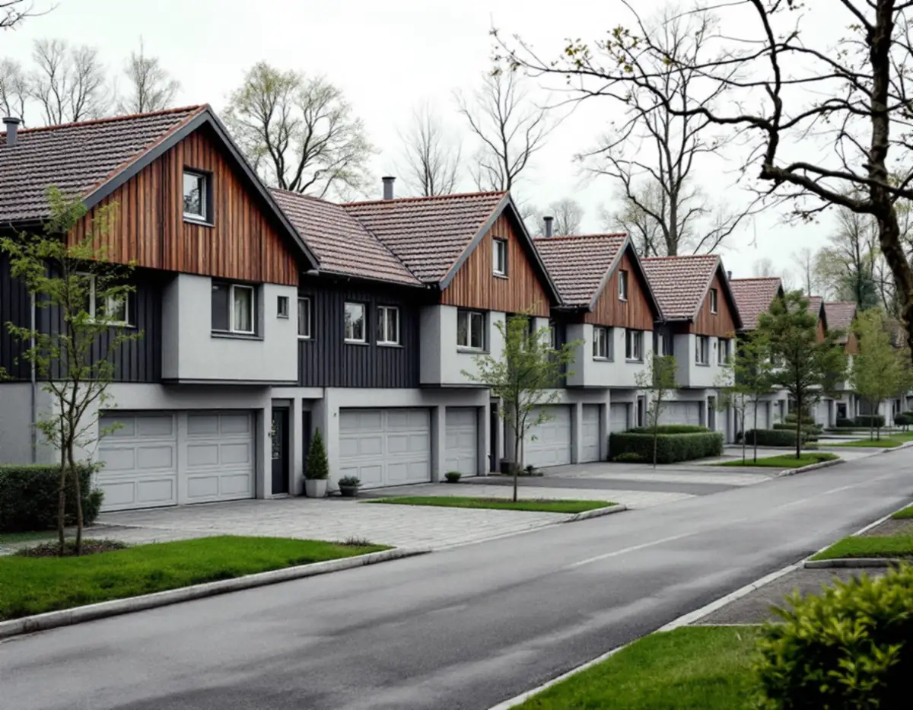
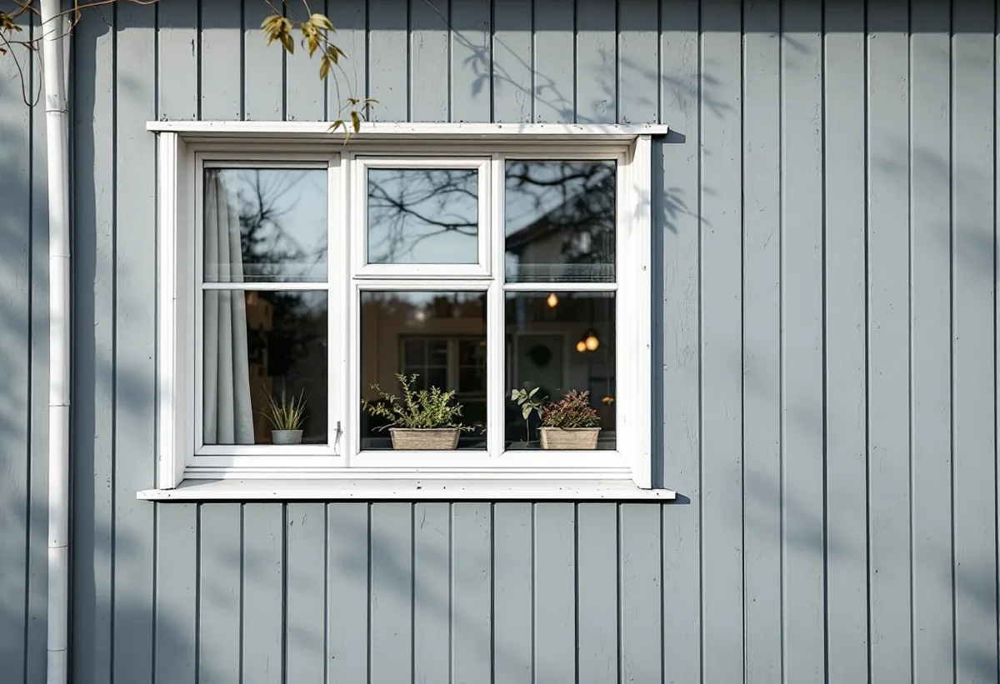
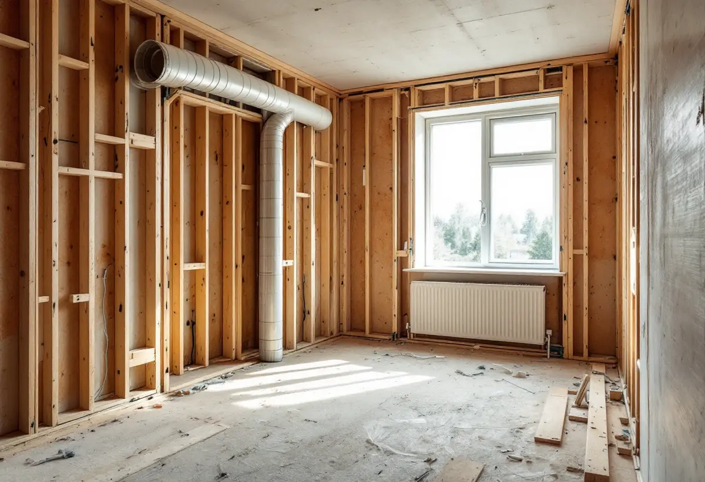

Platsbesök
Stomme, installationer, ventilation och ytskikt går vi igenom.
I Hässelby villastad ersattes många villor på 1960- och 1970-talen av täta grupper av likadana småhus, och när ett sådant hus renoveras lönar det sig ofta att göra allt i en följd. Geal Entreprenad AB totalrenoverar radhus, kedjehus och villor i Hässelby och börjar med det som kan vara farligt att riva.

Stadens strategi för småhus- och villaområden beskriver hur många villor i Hässelby villastad på 1960- och 1970-talen ersattes av täta, stora sammanhållna grupper av enhetlig småhusbebyggelse. Med mindre tomter och samlade parkeringsytor kunde marken utnyttjas bättre, och villastäderna utvecklades till stor del till renodlade villaområden.
Enligt stadens områdesfakta för 2025 finns 4 757 småhus med äganderätt i Hässelby villastad och 9 216 i hela Hässelby-Vällingby stadsdelsområde. Husen i en grupp är ofta byggda likadant, så det vi hittar när vi öppnar ett hus säger mycket om grannhusen också.

Strategin skriver om Hässelby att man i många områden prövade nya material, och att ett populärt material var asbestcement, mer känt som eternit. Eterniten har i många fall bytts ut, och i dag finns fasadskivor utan asbest som gör det möjligt att behålla radhusens uttryck.
Boverket skriver att byggnader från perioden 1940–1980 sannolikt innehåller asbest någonstans och nämner bland annat kakelfix och fog, golvmattor och lim, rörisolering, fasadskivor, ventilationskanaler och fönsterkitt. Provtagning och analys är det enda säkra sättet att veta, och asbesthaltigt material som tagits ner får inte säljas eller överlåtas. Vi tar prov innan rivningen planeras.
Stockholms stad beskriver frånluftsventilation som vanlig i hus byggda mellan 1961 och 1975. Centrala fläktar drar ut luften via don i kök, badrum och toalett, och tilluften kommer in via uteluftsdon i ytterväggarna och via otätheter. Systemet ger vissa möjligheter att rena tilluften och under vissa förutsättningar värmeåtervinning.
När ett hus från den tiden tätas med nya fönster och ny isolering behöver ventilationen ses över samtidigt. Installation eller väsentlig ändring av ventilationen, till exempel ett nytt aggregat, ny fläkt eller värmeväxlare som påverkar flöden, kräver anmälan och startbesked, och monteras något utvändigt kan det kräva bygglov.
Vi börjar med provtagning och, om det behövs, sanering. Därefter kommer stommen, sedan el och VVS, isolering och ventilation, och sist ytskikten. Ingrepp i bärande konstruktion kräver anmälan, och staden påpekar att ritningar kan vara ofullständiga.
Rotavdrag ges för att sanera asbest i samband med byggarbete, men inte för att mäta asbest. Om badrummet kan du läsa under badrumsrenovering i Hässelby, om fasaden under fasadrenovering i Hässelby och om tjänsten i stort under villarenovering.
Utanför villastaden ligger Hässelby gård och Hässelby strand, som stadens strategi räknar till tunnelbanestadens gruppbyggda småhusområden. Rad- och kedjehus placerades längst ut från centrum och tunnelbanestationen, med en successiv nedtrappning av skalan, och båda områdena är markerade som kulturhistoriskt värdefull miljö.
Strategin beskriver arkitekturen som en blandning av för tiden moderna idéer och folkhemsidealet, med fasader i rött tegel men också puts och skivor i fibercement. Enligt områdesfakta 2025 finns 324 småhus med äganderätt i Hässelby gård. När något ska ändras på fasaden i en sådan grupp kontrollerar vi först vad som gäller för området.

Stomme, installationer, ventilation och ytskikt går vi igenom.
Misstänkta material provas för asbest före rivningen.
Sanering, rivning, installationer och ytskikt står var för sig.
Anmälan vid bärande ändringar och ny ventilation.
Sanering, stomme, el, VVS, isolering, ventilation och ytskikt.
Vi går igenom huset och lämnar dokumentationen.
Skatteverket räknar asbestsanering i samband med byggarbete som rotarbete på småhus, liksom att riva väggar, bygga om planlösningen och tilläggsisolera. Att mäta fukt, radon eller asbest ger däremot inget avdrag.
Avdraget är högst 30 procent av arbetskostnaden och högst 50 000 kronor per person och år. Geal drar avdraget direkt på fakturan.
Om asbest måste saneras, husets storlek, hur mycket av stommen och installationerna som byts, ventilationen och vilka ytskikt du väljer. Efter ett gratis platsbesök får du ett skriftligt kostnadsförslag.
Renovera hela huset eller lägenheten.
Villarenovering →Takbyte, takbesiktning och plåtarbeten.
Takläggare i Hässelby →Villastaden, Hässelby strand och gård.
Takrenovering i Hässelby →Källarbadrum, backventil och bostadsrätt.
Badrumsrenovering i Hässelby →Riva, bygga nytt och delad tomt.
Byggföretag i Hässelby →Villastaden och radhusen.
Fasadmålning i Hässelby →Villastad, sommarstugor och grupphus.
Fasadrenovering i Hässelby →Slipa trägolvet – eller lägga nytt.
Golvläggare i Hässelby →Villastad, grupphus och radhus i Hässelby.
Målare i Hässelby →Plåttak efter eternit, rännor och beslag i Hässelby.
Plåtslagare i Hässelby →Altan, bod och plank i villastaden och radhusen.
Snickare i Hässelby →Eternit och asbest på taket.
Takbyte i Hässelby →Ny tapet i grupphus och villor.
Tapetsering i Hässelby →